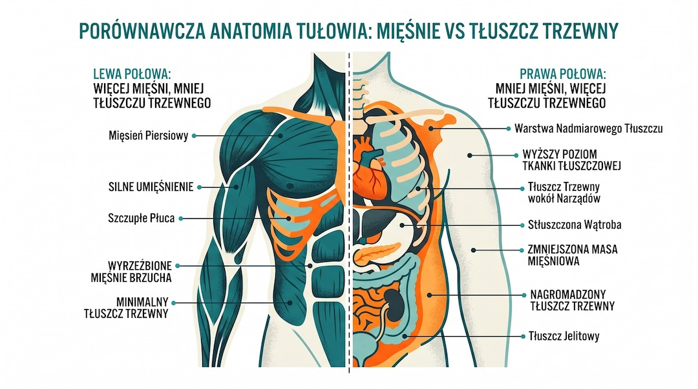
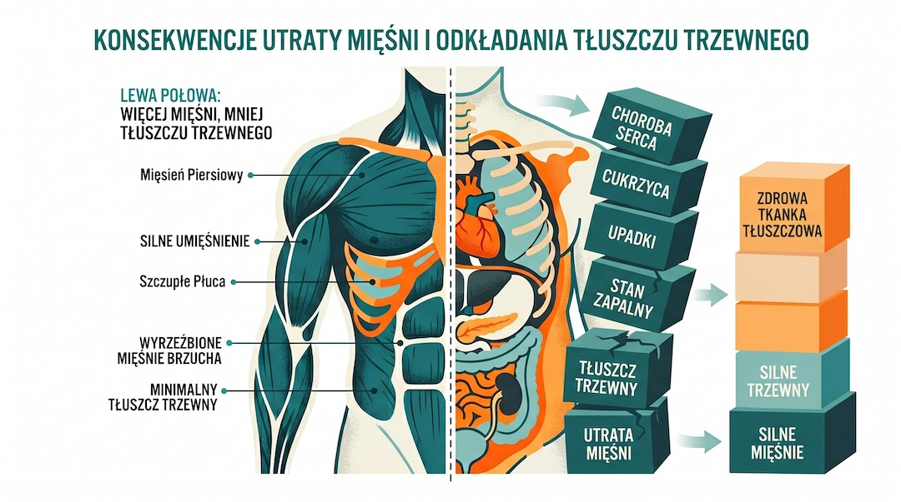
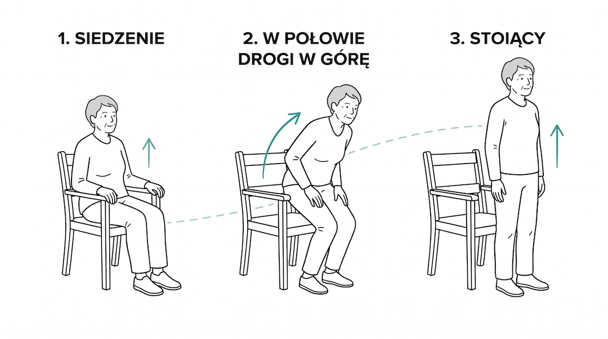
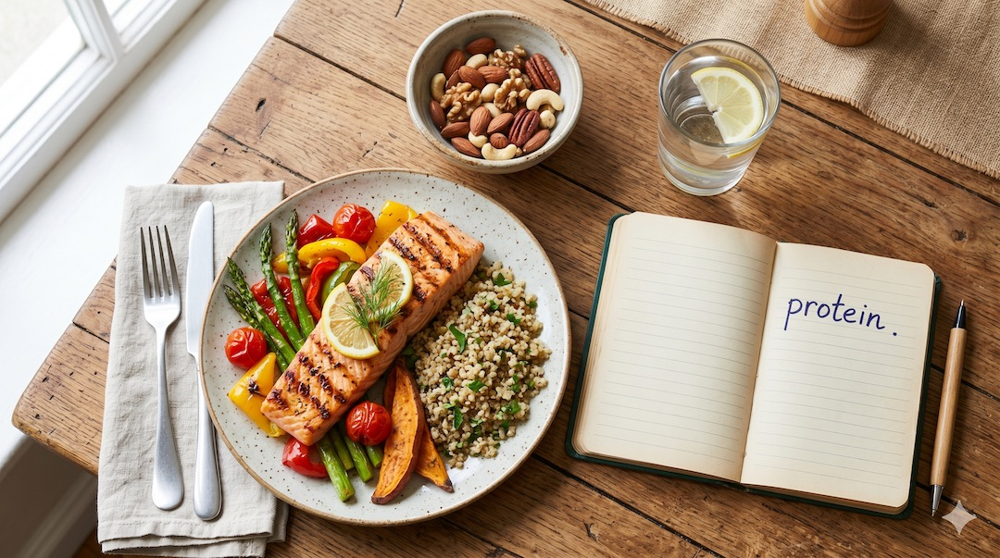

Waga w normie wcale nie musi oznaczać, że wszystko jest w porządku. Zdarza się, że pod szczupłą sylwetką kryje się za mało mięśni i za dużo tłuszczu. To otyłość sarkopeniczna – cichy problem, który po pięćdziesiątce uderza w nasze zdrowie i sprawność znacznie mocniej niż „zwykłe” dodatkowe kilogramy.
Kluczowe wnioski
- Prawidłowa masa ciała nie wyklucza jednoczesnej utraty mięśni i nadmiaru tłuszczu.
- Po pięćdziesiątce otyłość sarkopeniczna może długo rozwijać się bez wyraźnych objawów.
- Najskuteczniejsze wsparcie to połączenie treningu siłowego, ruchu wytrzymałościowego i diety bogatej w białko.
Dlaczego samo „ważę normalnie” to dziś za mało
Przez lata licznik na wadze był jedynym wyznacznikiem zdrowia. Jeśli BMI mieściło się w normie, uznawaliśmy, że wszystko jest w porządku. Nowoczesna medycyna pokazuje jednak znacznie bardziej złożony obraz.
Coraz częściej spotykamy osoby po pięćdziesiątce, które wyglądają szczupło i bez problemu mieszczą się w swoje ubrania, a mimo to mają bardzo mało mięśni i sporo ukrytego tłuszczu, zwłaszcza w okolicy brzucha. To właśnie ich wyniki badań często pokazują pierwsze sygnały ostrzegawcze: skoki cukru, gorsze lipidy czy przewlekły stan zapalny.
Ten stan to otyłość sarkopeniczna. Nie jest to jedynie nowe hasło, ale realny problem opisany w medycznych wytycznych. Najgorsze, że długo nie daje o sobie znać – aż do momentu, gdy nagle zaczyna brakować sił w codziennym życiu.
Najpierw sarkopenia: kiedy mięśnie zaczynają znikać
Sarkopenia to medyczne określenie na zbyt szybką utratę masy i siły mięśniowej wraz z wiekiem. Nie chodzi o naturalne starzenie się, ale o sytuację, w której mięśni jest już tak mało, że zaczyna to zagrażać Twojej sprawności i niezależności.
Pierwsze sygnały są bardzo prozaiczne: trudniej wstać z głębokiego fotela bez pomagania sobie rękami, wniesienie siatek z zakupami staje się wyzwaniem, a dłuższy spacer wymaga częstszych przerw niż dawniej. Po zwykłym dniu czujesz się tak, jak kiedyś po naprawdę ciężkim wysiłku.
Specjaliści oceniają ten stan mierząc siłę uścisku dłoni czy szybkość wstawania z krzesła. Warto jednak zadać sobie proste pytanie: „Czy wciąż jestem w stanie zrobić bez wysiłku wszystko to, co robiłem jeszcze kilka lat temu?”.
Gdy mało mięśni spotyka się z nadmiarem tłuszczu
Otyłość sarkopeniczna pojawia się wtedy, gdy w ciele brakuje mięśni, a ich miejsce zajmuje tkanka tłuszczowa. Możesz mieć prawidłową wagę, ale Twoje proporcje są niekorzystne: masz za mały „silnik”, a zbyt duży balast.
Szczególnie groźny jest tu tłuszcz trzewny, który odkłada się wokół narządów wewnętrznych. To on jest najbardziej aktywny metabolicznie i sprzyja stanom zapalnym w całym organizmie.
W praktyce możesz ważyć tyle, co zawsze, a mimo to mieć ciało, które boryka się z problemami typowymi dla dużej nadwagi: nadciśnieniem, gorszą tolerancją glukozy czy większym ryzykiem kontuzji. Lustro rzadko to pokazuje – prawda kryje się w wynikach badań składu ciała.

Dlaczego tego problemu nie widać na pierwszy rzut oka
Lustro ocenia głównie kształt sylwetki i to, czy dopinasz się w ulubionych spodniach. Nie pokaże jednak, ile procent Twojego ciała to mięśnie, a ile tłuszcz – i gdzie dokładnie ten tłuszcz się ukrył.
Osoby z tym problemem często mają szczupłe ręce i nogi, ale coraz więcej tłuszczu w pasie. Nogi stają się wizualnie chudsze, co bierzemy za dobrą monetę, a w rzeczywistości oznaczają one słabsze, zanikające mięśnie. Przy takiej budowie łatwo przeoczyć moment, w którym tracimy sprawność.
Często też niesłusznie akceptujemy spadek sił jako „normalny objaw starości”. Tymczasem często to nie metryka jest winna, ale właśnie utrata mięśni przy jednoczesnym narastaniu ukrytej otyłości.
Kto jest najbardziej narażony po pięćdziesiątce
Otyłość sarkopeniczna nie dotyczy tylko osób z dużą nadwagą. Często dotyka tych „pomiędzy” – którzy nie są otyli, ale przez lata mało się ruszali i nie dbali o odpowiednią ilość białka w diecie.
W grupie ryzyka są przede wszystkim osoby, które:
- większość dnia spędzają w pozycji siedzącej,
- miały przerwy w aktywności z powodu kontuzji lub chorób,
- stosowały restrykcyjne diety (głodówki), które niszczą mięśnie zamiast tłuszczu,
- borykają się z cukrzycą typu 2 lub przewlekłymi stanami zapalnymi,
- unikają jakiegokolwiek treningu oporowego (siłowego).
To nie jest wyrok, ale sygnał, by zacząć zwracać większą uwagę na siłę swoich mięśni, a nie tylko na to, co pokazuje waga łazienkowa.
Dlaczego to zagrożenie większe niż „zwykła” nadwaga
Badania pokazują, że połączenie słabych mięśni z nadmiarem tłuszczu jest znacznie groźniejsze niż każdy z tych problemów osobno. Mięśnie są zbyt słabe, by chronić stawy i kręgosłup, a tłuszcz zwiększa ryzyko chorób metabolicznych.
Osoby z otyłością sarkopeniczną częściej borykają się z nadciśnieniem, zaburzeniami cukru i cholesterolu. Ich organizm ma mniej aktywnego biologicznie „dobrego materiału”, a więcej tkanki sprzyjającej chorobom cywilizacyjnym.
W medycynie długowieczności ten temat jest obecnie kluczowy. Statystyki są nieubłagane: to właśnie ten specyficzny stan najbardziej zwiększa ryzyko utraty samodzielności w późniejszym wieku.

Obalamy najczęstsze mity
Mit 1: „Dobre BMI oznacza brak otyłości”. – Fałsz. BMI nie odróżnia mięśni od tłuszczu. Możesz ważyć prawidłowo, a mieć niebezpiecznie wysoki poziom tłuszczu trzewnego.
Mit 2: „Szybka dieta rozwiąże problem”. – Wręcz przeciwnie. Agresywne chudnięcie bez ruchu to prosta droga do jeszcze większej utraty mięśni. Waga spadnie, ale będziesz słabszy.
Mit 3: „Po pięćdziesiątce brak sił to norma”. – Nieprawda. Tempo spadku formy można drastycznie spowolnić, a utracone mięśnie – przy odpowiednim podejściu – częściowo odbudować nawet po 60-tce.
Mit 4: „Siłownia jest tylko dla młodych”. – To właśnie u osób dojrzałych trening oporowy jest najważniejszym lekarstwem na sarkopenię. Odpowiednio dobrany, jest bezpieczny i zalecany przez lekarzy.
Jak sprawdzić formę swoich mięśni w domu
Pełną diagnozę stawia specjalista, ale już w domu możesz zauważyć pierwsze niepokojące sygnały.
Zastanów się:
- Czy Twoja waga stoi w miejscu, ale czujesz, że masz znacznie mniej siły niż dwa, trzy lata temu?
- Czy nogi stały się szczuplejsze, ale brzuch wyraźnie urósł i stał się twardszy?
- Czy wejście na wyższe piętro lub szybki marsz męczą Cię bardziej, choć Twoja waga się nie zmieniła?
- Czy po zwykłej infekcji lub przerwie od spacerów znacznie trudniej wrócić Ci do dawnej sprawności?
Jeśli na większość pytań odpowiadasz twierdząco, czas potraktować mięśnie jako priorytet. Warto pomyśleć o badaniu składu ciała lub konsultacji z fizjoterapeutą.

Co mówią najnowsze badania medyczne
Ostatnie lata przyniosły przełom w rozumieniu tego problemu. Wiemy już, że otyłość sarkopeniczna nie jest rzadkim zjawiskiem – dotyka dużą grupę osób prowadzących siedzący tryb życia.
Międzynarodowe grupy ekspertów alarmują: ten stan wymaga zupełnie innego podejścia niż „zwykłe odchudzanie”. Samo ograniczanie jedzenia bez dbania o mięśnie może wręcz pogorszyć sytuację metaboliczną organizmu.
Współczesna nauka stawia sprawę jasno: mięśnie to nasz największy organ metaboliczny i nasza polisa ubezpieczeniowa na zdrowe starzenie się.
Ruch, który ratuje Twoje mięśnie
Kluczem jest aktywność, która angażuje zarówno serce, jak i mięśnie. Same spacery to świetny początek, ale najlepsze rezultaty daje połączenie treningu siłowego z wysiłkiem wytrzymałościowym.
Trening siłowy (oporowy) pomaga zatrzymać zanik mięśni, a nawet go cofnąć. Nie musisz od razu podnosić wielkich ciężarów – na start wystarczą ćwiczenia z gumami, lekkimi hantlami lub ciężarem własnego ciała, powtarzane 2–3 razy w tygodniu.
Wysiłek wytrzymałościowy (szybki marsz, rower, pływanie) wspiera serce i pomaga kontrolować cukier. Najważniejsza zasada: przy tym problemie nie odchudzamy się głodówką, ale „dożywiamy” mięśnie ruchem.
Programy łączące ćwiczenia siłowe, cardio i codzienną aktywność (jak np. pilnowanie liczby kroków) dają najlepsze i najbardziej trwałe efekty.

Dieta po 50-tce: budulec ważniejszy niż kalorie
Przy otyłości sarkopenicznej nie chodzi o to, by jeść po prostu mniej. Chodzi o to, by jeść mądrzej – dając mięśniom budulec, a ograniczając to, co karmi tłuszcz trzewny.
Najważniejsze kroki to:
- Zadbanie o odpowiednią ilość białka w każdym posiłku (wiele osób po 50-tce je go za mało),
- Rezygnacja z „pustych kalorii” i wysoko przetworzonego jedzenia, które nie odżywia mięśni,
- Regularne jedzenie zamiast podjadania między posiłkami,
- Łączenie białka z dużą ilością warzyw i węglowodanami złożonymi.
Zbyt agresywne cięcie kalorii bez dbania o białko i ruch to najprostsza droga do utraty resztek mięśni. Najpierw zadbaj o jakość jedzenia i zacznij ćwiczyć, a waga z czasem sama zacznie się normować.

Twój plan działania na dziś
Po pierwsze: Potraktuj swoją siłę tak samo poważnie jak wyniki badań krwi. Spróbuj wstać z krzesła bez podpierania się rękami – jeśli to sprawia trudność, masz już sygnał, że Twoje mięśnie potrzebują uwagi.
Po drugie: Jeśli dawno nie robiłeś badań, umów się na podstawowy pakiet. Zapytaj lekarza o ocenę składu ciała i siły mięśniowej – to coraz częściej standard w nowoczesnych gabinetach.
Po trzecie: Wpisz do kalendarza dwa spacery i dwa krótkie domowe treningi siłowe (np. przysiady przy krześle, ćwiczenia z lekkimi hantlami) na najbliższy tydzień. Nie muszą być długie, ważne, by się odbyły.
Po czwarte: Przyjrzyj się swojej kolacji i śniadaniu – czy jest tam wystarczająco dużo białka (jajka, twaróg, chude mięso, strączki)? Czasem jedna mała zmiana w jadłospisie daje lepsze efekty niż restrykcyjna dieta.
Ważne jest to, z czego jesteś zbudowany
Otyłość sarkopeniczna to temat, który nareszcie wychodzi z cienia. Po pięćdziesiątce kluczowe jest, by nie dać się uśpić prawidłowemu wynikowi na wadze.
Twoje ciało to Twoja sprawność i zapas siły na kolejne dekady. O mięśnie warto walczyć nie dla wyglądu na plaży, ale po to, by cieszyć się życiem po swojemu, bez ograniczeń i lęku przed upadkiem.
Jeśli ten tekst sprawił, że inaczej spojrzałeś na swoje zdrowie, to znaczy, że pierwszy krok masz już za sobą. Teraz czas na ruch.
Najczęstsze pytania
Czy otyłość sarkopeniczna dotyczy tylko osób z dużą nadwagą?
Nie. Może występować także u osób z prawidłowym BMI, jeśli jednocześnie tracą mięśnie i gromadzą tłuszcz trzewny.
Jak szybko można odczuć poprawę po wdrożeniu treningu siłowego?
Pierwsze efekty sprawnościowe wiele osób zauważa po kilku tygodniach regularnych ćwiczeń 2–3 razy w tygodniu.
Czy można schudnąć i jednocześnie odbudowywać mięśnie po 50-tce?
Tak, ale wymaga to rozsądnego deficytu kalorycznego, odpowiedniej ilości białka i systematycznego treningu oporowego.
Czy warto zrobić badanie składu ciała?
Tak, bo pomaga ocenić proporcję mięśni i tłuszczu, a to przy tym problemie jest ważniejsze niż sama liczba kilogramów.
Źródła
- 1. Międzynarodowe wytyczne i konsensus w sprawie diagnozowania otyłości sarkopenicznej u osób starszych: ESPEN i EASO — consensus statement.
- 2. Przeglądy naukowe (metaanalizy) dotyczące związku między niską masą mięśniową a ryzykiem chorób metabolicznych: training modalities for elder sarcopenic obesity — network meta-analysis.
- 3. Badania interwencyjne potwierdzające skuteczność łączenia treningu oporowego i wytrzymałościowego u osób po 50. roku życia: systematic review of exercise interventions in sarcopenic obesity.
- 4. Publikacje medyczne dotyczące wpływu tłuszczu trzewnego na stan zapalny organizmu: adipose tissue inflammation and metabolic dysfunction in obesity.
- 5. Zalecenia dietetyczne dla osób dojrzałych w kontekście zapobiegania sarkopenii: position paper PROT-AGE — rekomendacje białka.
Ważne jest to, z czego jesteś zbudowany.
Uwaga: Artykuł ma charakter informacyjny i edukacyjny. Nie zastępuje konsultacji lekarskiej ani indywidualnej diagnozy.